上一章
我自己跑马拉松的计划是1年2个，一春一秋。来了日本体能差了很多，跑的很慢，所以我有可能挑7小时的。疫情后我就没跑过了，身体一直没达到跑全马的状态。很希望很快可以跑起来呢。

第23个全程-2017年2月19日，来日第一个马拉松-高知。第一次一个人去跑。

2017年5月28日富士山山中湖半程，携老带嫩去玩。
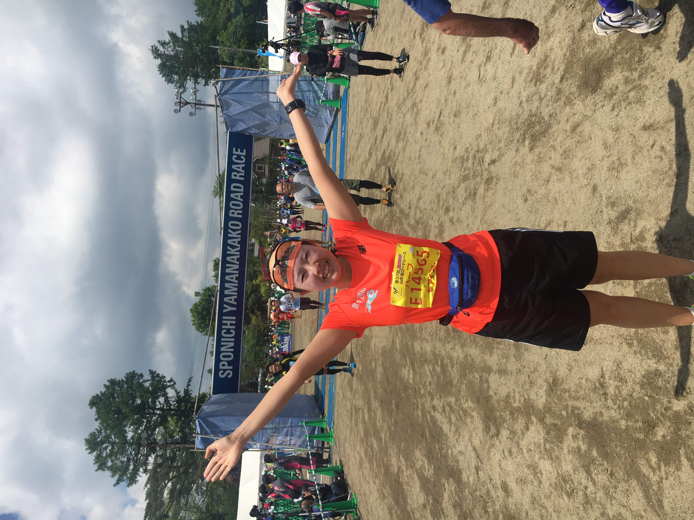
2017年5月28日富士山山中湖半程
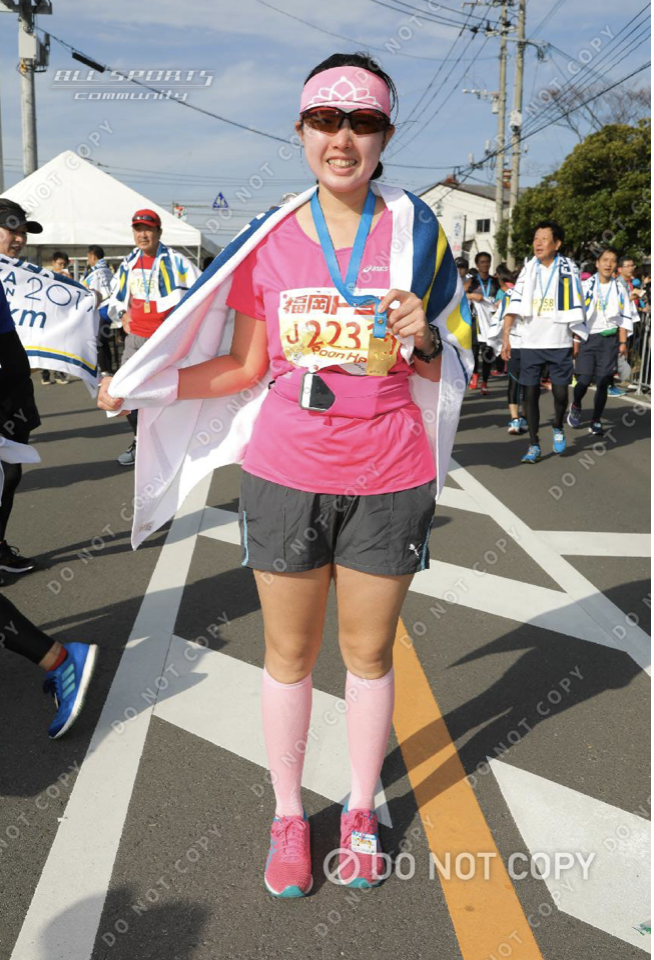
第24个全程-2017年11月12日福冈，和许镭一起跑的。
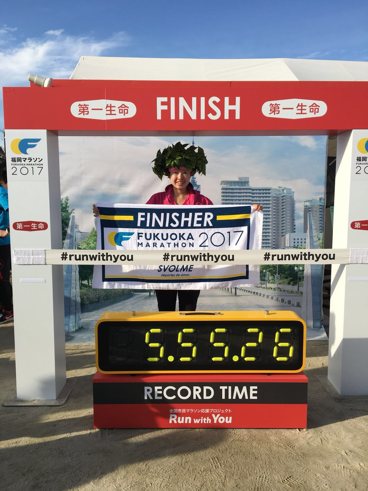
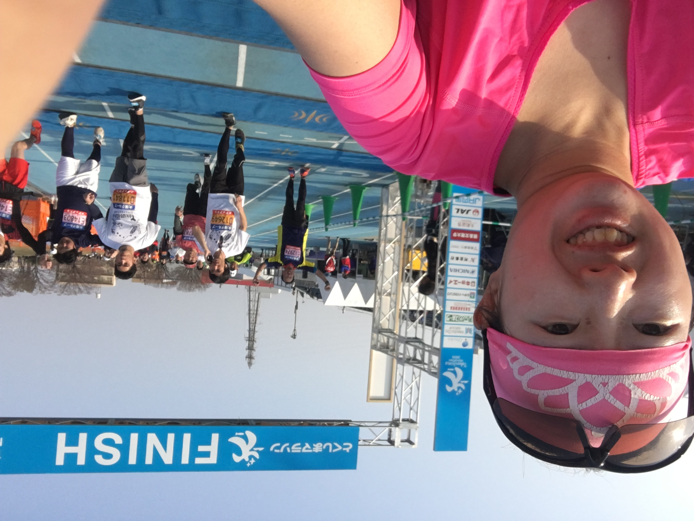
第25个全程-2018年3月25日德岛全程。前一个月一次东飞，一次西飞。飞完一周就跑，跑下来身体完全受不了。肠胃不适，一辈子没试过吐的那么厉害，还拉肚子。在德岛去新干线上遇到一位大叔会说一两句中文给我一些药，很感动。跑完那天去冈山住酒店，酒店离车站几百米也要打车。晚上吃不下，周一回到家里也不能吃。到周二早上饿扁。以后再也不出完远门就跑马拉松了。
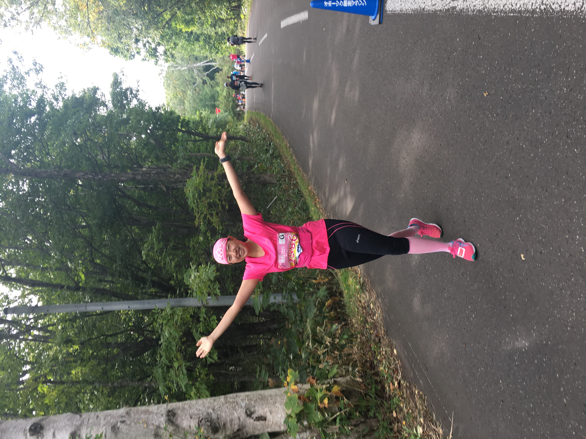
第26个全程-2018年9月30日網走，非常遥远的地方。从札幌坐大巴要7小时。感谢许镭陪我。
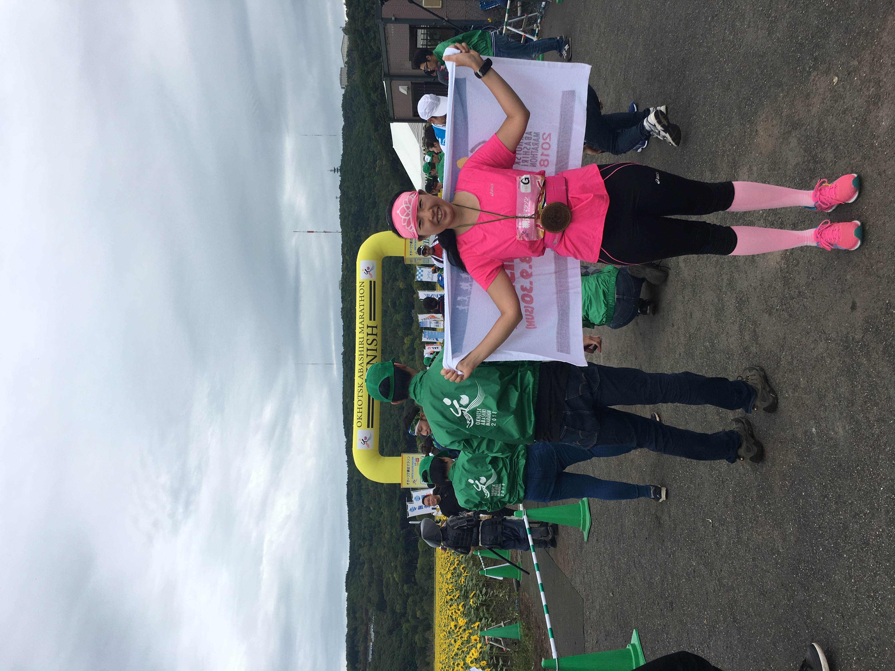
網走
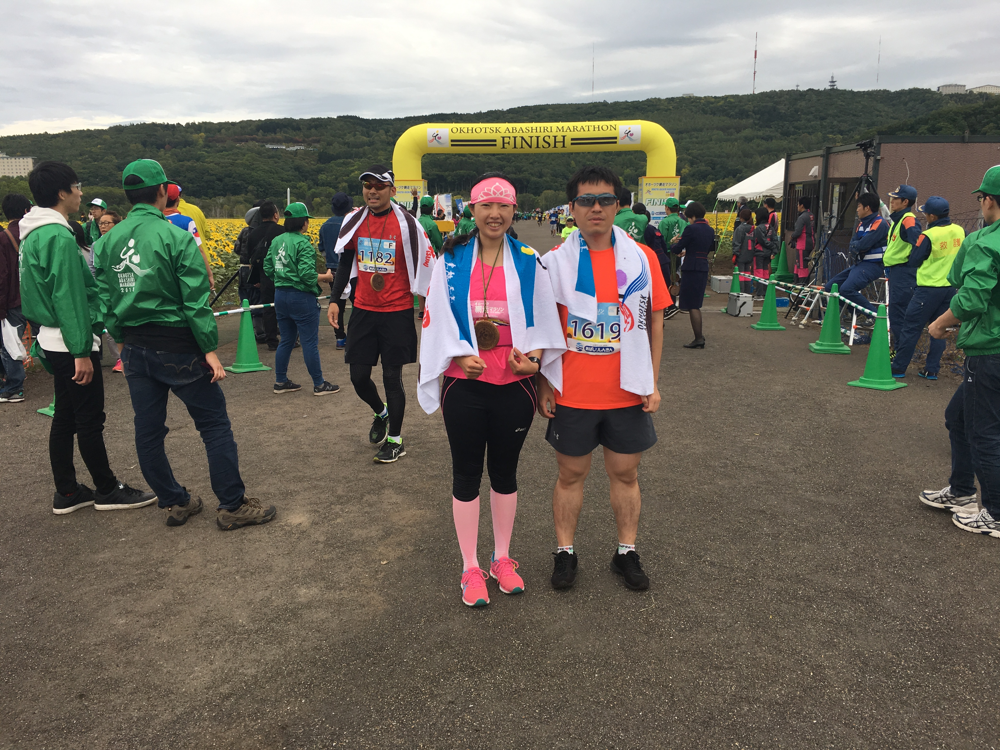
網走
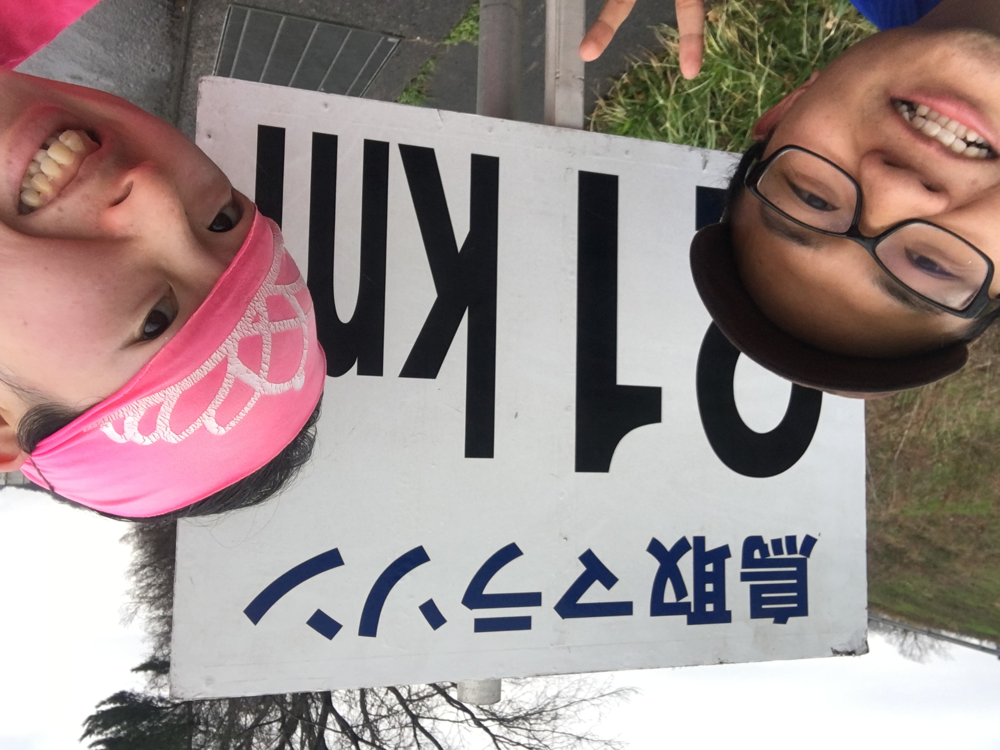
第27个全程-2019年3月10日鸟取，和学长一起。他原来兴奋无比到最后毫无表情。
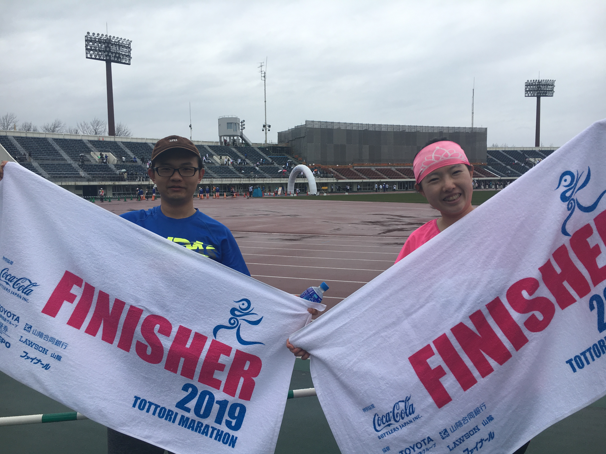
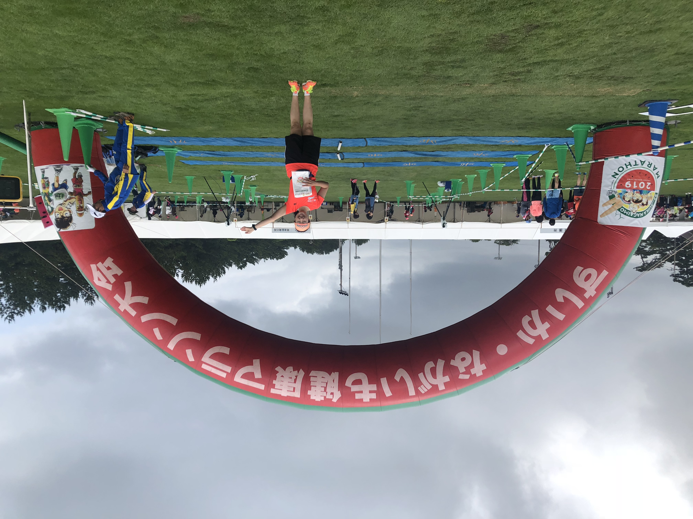
2019年6月16日鸟取柯南10公里。和学长跑完全程去柯南博物馆发现10公里比赛，组织大家一起跑
2019年10月14日，组织大家一起参加广大无限接力赛。
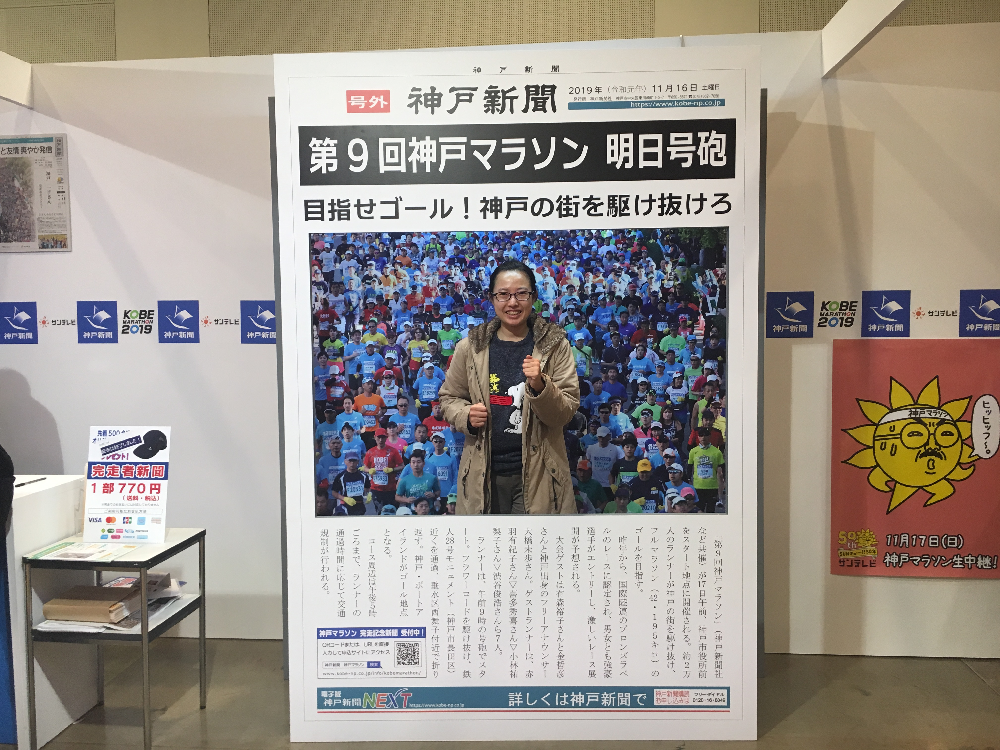
第27个全程-2019年11月17日神户，和南岳一起跑的。他首马。
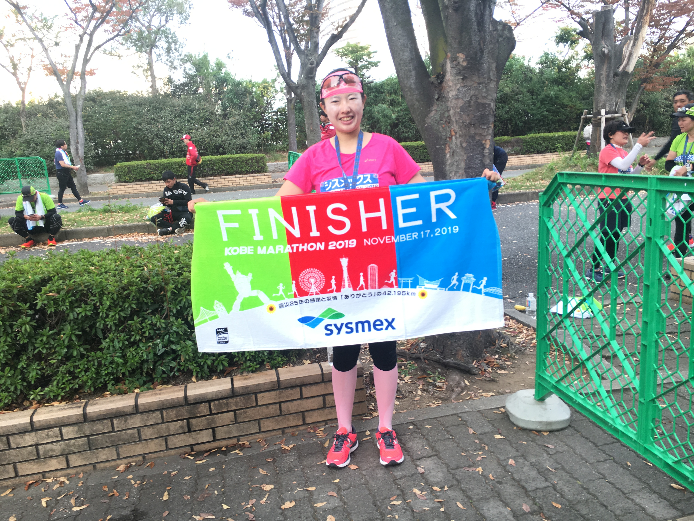
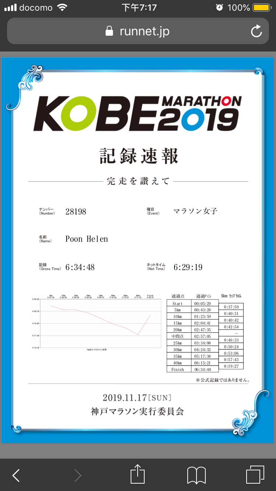
跑了6:29。
下一章